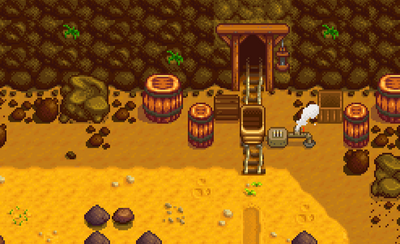

Vagoneta

La Vagoneta es un método de viaje que se desbloquea después de completar los lotes de la Sala de caldera o comprándola en el Formulario de proyectos de desarrollo comunitario de Joja, en el MercaJoja, por  15 000o. Después de que el lote de la Sala de caldera esté completado, la "vagoneta" no podrá ser usada hasta el día siguiente, porque los Junimos la repararán por la noche.
15 000o. Después de que el lote de la Sala de caldera esté completado, la "vagoneta" no podrá ser usada hasta el día siguiente, porque los Junimos la repararán por la noche.
Las vagonetas te permitirán viajar entre 5 destinos a través del Stardew Valley.
Las minas
 |

|
Lugares cercanos:
Pueblo Pelícano

|
|
Lugares cercanos:
Parada de autobús
|

|
Lugares cercanos:
Cantera
|
 |
Lugares cercanos:
NOTA: Este destino no estará disponible hasta que la Cantera esté accesible después de reparar el puente en el lote "Sala de manualidades" o comprándolo en el Formulario de proyectos de desarrollo comunitario de Joja por  25 000o.
25 000o.
| Lugares | |
|---|---|
| Lugares | Bosque secreto • Bosque Tizón • Bosque trasero • Cantera • Caverna Calavera • Cementerio • Cloacas • Desierto de Calico • Estanque de la granja • Ferrocarril • Isla Jengibre • Granja • Mina de cantera • Minas • Montaña • Playa • Madriguera de bichos mutantes • Pantano de la Bruja • Parada de autobús • Pueblo Pelícano • Túnel • Vagoneta |